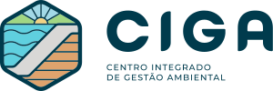

 

O Centro Integrado de Gestão Ambiental (CIGA) é uma plataforma tecnológica criada em 2022, pelo CAOMA, que contribui na implementação de novos padrões para o acompanhamento de segurança de barragens, fornecendo subsídios à tomada de decisão e dando transparência às ações realizadas pelo MPMG.
O CIGA está projetado para consolidar e disponibilizar ao MPMG e demais interessados diferentes tipos de informações relacionadas ao cumprimento de legislações ambientais e dados relacionados às temáticas acompanhadas pelo CAOMA.
Ele recebe das Auditorias Técnicas Independentes o controle das recomendações técnicas emitidas, validando e carregando as informações em banco de dados. Essas informações ficam disponíveis aos promotores do MPMG e autarquias parceiras em um Painel Gerencial com números, tabelas, gráficos e imagens. Pelo Painel é possível visualizar diversos dados provenientes das recomendações técnicas, detalhes sobre os TACs assinados, histórico de registros das estruturas geotécnicas cadastradas no SIGBM, imagens de satélite que permitem o acompanhamento do ciclo de vida das barragens, além de informações e a localização das estruturas listadas nos TACs de Descaracterização.
Pelo Painel é possível visualizar diversos dados provenientes das recomendações técnicas, detalhes sobre os TACs assinados, histórico de registros das estruturas geotécnicas cadastradas no SIGBM, imagens de satélite que permitem o acompanhamento do ciclo de vida das barragens, além de informações e a localização das estruturas listadas nos TACs de Descaracterização.
O CIGA representa uma nova abordagem do Ministério Público de Minas Gerais nas tratativas relacionadas ao meio ambiente e a mineração no estado. Por meio do CIGA, promotores e diversas partes interessadas passaram a contar com uma plataforma de dados e uma sala de operações que auxiliam no acompanhamento dos acordos assinados entre o poder público e as empresas auditadas.
O CIGA é uma ferramenta em constante expansão, desenvolvendo novas formas de aproximar a sociedade civil das atuações do Ministério Público de Minas Gerais e ampliando a visibilidade de processos e ações em prol da sociedade mineira. O CIGA fortalece o compromisso do MPMG na defesa das pessoas e do meio ambiente.

Dúvidas frequentes
O Termo de Ajustamento de Conduta, ou TAC, é um acordo que o Ministério Público celebra com responsáveis por uma ameaça ou violação de direitos. Seu objetivo é impedir que a ilegalidade ou situação de risco permaneça, além de buscar reparar o dano causado e evitar que ações judiciais sejam propostas. O termo "TACs" é utilizado no CIGA como uma generalização que abrange outros instrumentos, como Termos de Compromisso e Termos de Acordo Judicial, em que todos visam solucionar conflitos de forma extrajudicial. Outras informações sobre TACs podem ser encontradas no vídeo ao lado acima.
Frequentemente, uma das obrigações de um TAC firmado entre o Ministério Público e as mineradoras é a contratação de uma empresa de Auditoria Técnica e Ambiental Independente. Por ser independente e não possuir vínculo direto com a mineradora auditada, seus resultados são isentos de interesse ou influência do empreendedor. A Auditoria tem a função de examinar e atestar a integridade e veracidade das ações realizadas para o cumprimento dos TACs. Também analisa ações relacionadas à segurança de trabalhadores e pessoas, à reparação e monitoramento das estruturas, à caracterização de danos e ao meio ambiente e infraestruturas afetadas. A Auditoria emite relatórios para o Ministério Público, com as recomendações que foram emitidas à mineradora auditada.
É por meio de recomendações técnicas que a Auditoria solicita informações, requer apresentação de evidências ou esclarecimentos quanto às decisões técnicas implementadas pelas empresas auditadas. A Auditoria questiona as condições observadas e solicita outros esclarecimentos com o objetivo de alcançar a melhor solução técnica possível, baseado em legislações, regulamentos e nas melhores práticas aplicáveis. As recomendações técnicas são emitidas a partir de evidências disponibilizadas por meio de documentos, reuniões ou inspeções técnicas de campo, de forma objetiva e sucinta. Elas tratam diretamente dos problemas em questão, indicando “o que”, “quando” e “onde” se recomenda a ação da empresa auditada, cabendo ao empreendedor definir “como” resolver as questões e apresentá-las para avaliação. As recomendações técnicas são concluídas quando a Auditoria entende que os aspectos requisitados foram cumpridos pela empresa auditada.
Em 2015, após a ruptura da Barragem de Fundão, em Mariana, iniciou-se um movimento de questionamento acerca da permanência ou não das barragens de rejeito de mineração em Minas Gerais. Nesse contexto, em prol da cultura de prevenção, o MPMG implementou, por meio dos TACs, uma série de acordos com a Samarco/Fundação Renova para o acompanhamento das questões relacionadas às obras emergenciais e ao manejo do rejeito de Fundão e institucionalizou o Programa de Auditoria Técnica e Ambiental Independente (ou, Programa de Auditoria).
Em 2019, após a ruptura das Barragens B-I, B-IV e B-IV_A, em Brumadinho, e o reconhecimento dos desafios e riscos existentes nas estruturas de contenção de rejeito de mineração em Minas Gerais, o processo de reavaliação dos estudos de Dam Break (extensão das manchas hipotéticas de inundação) e de segurança geotécnica das barragens se expandiu para as estruturas da Vale em Minas Gerais. Assim, o Programa de Auditoria foi expandido e passou a ser composto por quatro empresas de abrangência internacional que atuam como Auditoras Técnicas Independentes e se reportam ao MPMG: Advisian, AECOM, RIZZO e SLR.
Em 2022, o MPMG, em parceira com outros órgãos públicos*, firmou Termos de Compromisso para que as mineradoras responsáveis por barragens alteadas a montante cumpram as prerrogativas dos processos de descaracterização. A iniciativa visa que o processo de descaracterização das estruturas ocorra de forma segura no menor tempo possível tecnicamente, associado às melhores tecnologias existentes, envolvendo ainda a contratação de equipes técnicas especializadas e independentes para acompanhamento. Essa iniciativa reforça o papel diligente do MPMG, promovendo ações que visam o desenvolvimento da mineração no estado de Minas Gerais de forma mais segura e responsável.
* São eles: Governo de Minas Gerais por meio da Secretaria de Estado de Meio Ambiente e Desenvolvimento Sustentável (SEMAD) e da Fundação Estadual do Meio Ambiente (FEAM), Ministério Público Federal (MPF) e Agência Nacional de Mineração (ANM)
As barragens de rejeitos de mineração são estruturas importantes na indústria de mineração, projetadas para armazenar os resíduos sólidos e água gerados durante o processo de extração e beneficiamento do minério. Essas barragens desempenham um papel fundamental na contenção e gestão adequada desses materiais, evitando sua dispersão e minimizando possíveis impactos ambientais.
Elas podem ser construídas utilizando diferentes métodos e técnicas de alteamento. Essas variações nos métodos construtivos levam em consideração as características geotécnicas do local, o volume de rejeitos a ser armazenado e outros fatores relevantes.
Em razão da sua magnitude e complexidade, as barragens de rejeitos podem apresentar desafios significativos. O acúmulo desses materiais pode resultar em uma aparência visual marcante no ambiente, alterando a paisagem local. Além disso, é crucial garantir a integridade dessas estruturas para evitar possíveis vazamentos ou rupturas que possam acarretar danos severos e até irreversíveis. O vídeo ao lado abaixo detalha os métodos de alteamento de barragens.
O termo "alteamento" refere-se ao processo de elevação ou aumento da altura de uma barragem de mineração ao longo do tempo. À medida que a barragem de rejeitos de mineração recebe continuamente os resíduos sólidos e água resultantes do processamento do minério, torna-se necessário aumentar sua capacidade de armazenamento para acomodar o volume crescente de materiais. O alteamento da barragem pode ser realizado por diferentes métodos, como a montante, a jusante e por linha de centro. Cada método possui características técnicas e construtivas distintas e a escolha do tipo de alteamento depende de diversos fatores. O vídeo ao lado acima detalha os métodos de alteamento de barragens.
Após a ruptura da barragem da Samarco, em 2015, ficou clara a necessidade de maior regulação e controle destas estruturas. Após 2019, com o rompimento das barragens B-I, B-IV e B-IV_A na Mina do Córrego do Feijão, em Brumadinho, o MPMG, em consonância com as demandas da sociedade, atuou para a aprovação do Projeto de Lei de Iniciativa Popular conhecido como Lei Mar de Lama Nunca Mais (Lei Estadual no 23.291/2019), que “disciplina, especialmente, o licenciamento ambiental e a fiscalização de barragens de rejeitos ou resíduos industriais ou de mineração no Estado, de forma articulada com a política nacional de segurança de barragens.”
Em 24/02/2022, o Ministério Público de Minas Gerais, juntamente com outros órgãos públicos, firmou Termos de Compromisso de Descaracterização das barragens construídas pelo método a montante e que não atenderam ao prazo definido para a descaracterização estabelecido pela Lei Mar de Lama Nunca Mais. Os principais marcos de atuação do MPMG estão detalhados no vídeo ao lado abaixo. Essas variações nos métodos construtivos levam em consideração as características geotécnicas do local, o volume de rejeitos a ser armazenado e outros fatores relevantes.